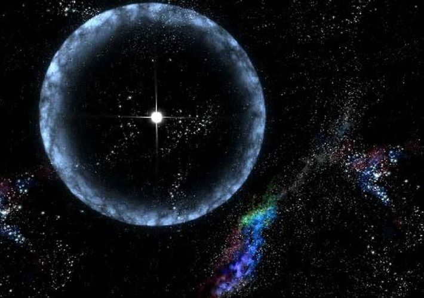

My Universe
¡Gracias por visitar mi página! Este es mi primer proyecto de programación web. Se que el diseño no es lo mejor; pero es la primera vez que hago algo relacionado a este maravilloso mundo de la programación. Me esfuerzo en aprender :D
Top de estrellas más grandes
-

- Sol
- R136a1, estrella hipergigante azul
- Estrella de la Nebulosa Peonía
- Estrella Pistola
- VY Canis Majoris
- UY Scuti
- Antares
- Aldebarán
- Sirius A
Misiones Espaciales
- Apolo 8
- Géminis
- Apolo 11
- Luna 1
- Curiosity
- Artemis
- Telescopio James Webb
- Perseverance Mars Rover
- Parker Solar Probe/Solar Orbiter
- Space X-Comercial Crew
México en la Carrera Espacial
.jpg)
- CanSat
- Proyecto Quetzal
- Colmena
Astrobiología
La astrobiología es el estudio de los orígenes, evolución, distribución y futuro de la vida en el universo. Este campo interdisciplinario requiere una comprensión integral e integrada de los fenómenos biológicos, geológicos, planetarios y cósmicos. La astrobiología abarca la búsqueda de entornos habitables en nuestro sistema solar y en planetas alrededor de otras estrellas; la búsqueda de evidencia de química prebiótica o vida en cuerpos del sistema solar como Marte, la luna Europa la búsqueda de evidencia de química prebiótica o vida en cuerpos del sistema solar como Marte, la luna Europa de Júpiter y la luna Titán de Saturno; e investigación sobre el origen, la evolución temprana y la diversidad de la vida en la Tierra. Los astrobiólogos abordan tres preguntas fundamentales: ¿Cómo comienza y evoluciona la vida? ¿Existe vida en otros lugares del universo? ¿Cuál es el futuro de la vida en la Tierra y más allá? La Tierra es un mundo de asombrosa biodiversidad. Sin embargo, a pesar de la extrema variedad de formas de vida en nuestro planeta, hay un rasgo clave que comparten todas las formas de vida aquí: ninguna puede sobrevivir sin agua. Es por eso que, cuando los científicos exploran el cosmos en busca de mundos potencialmente habitables, la presencia de agua líquida es uno de los rasgos más atractivos que puede exhibir un objeto celestial. A 390 millones de millas de distancia de la Tierra, una luna helada alberga una abundancia de agua líquida justo debajo de una superficie congelada. La luna Europa de Júpiter es hogar de un mar extraterrestre que tiene miles de millones de años de antiguedad y puede ser hasta diez veces más profundo que el propio océano global de la Tierra. La existencia del océano de Europa, combinada con las interacciones químicas entre el agua y su núcleo rocoso, convierte a la luna en un candidato para estudiar la estabilidad en nuestro vecindario solar.
Origen del Universo
La teoría que mejor describe el origen del Universo es la del “Big Bang”. En la propuesta el Universo completo estaba concentrado en un mismo punto, a partir del cual empezó a expandirse, desde las partículas elementales en los primeros milisegundos, hasta las galaxias que se pueden observar hoy en día. El Big Bang es cómo los astrónomos explican la forma en que comenzó el universo. Es la idea de que el universo comenzó como un solo punto, luego se expandió y se estiró para crecer tanto como lo es ahora, ¡y todavía se está extendiendo!
En sus orígenes, el universo estaba formado por partículas diminutas y calientes, mezcladas con luz y energía. No se parecía en nada a lo que vemos ahora. A medida que todo eso se fue expandiendo y fue ocupando más espacio, el universo se empezó a enfriar. Las pequeñas partículas se agruparon. Y formaron los átomos. Después esos átomos se agruparon. Luego de muchísimo tiempo, los átomos se juntaron para formar las estrellas y las galaxias. Las primeras estrellas crearon átomos y grupos de átomos más grandes. De ahí nacieron más estrellas. Al mismo tiempo, las galaxias se chocaban y agrupaban unas con otras. A medida que nacían nuevas estrellas y morían otras, se formaban cosas como asteroides, cometas, planetas y agujeros negros.
El universo tiene 13,800,000,000 de años de edad, esto es 13.8 mil millones.
Origen de las Estrellas
Las estrellas no son objetos inmutables. Nacen, envejecen y mueren, aunque estos procesos suceden tan lentamente que no son apreciables en escalas de tiempo humanas. El nacimiento de una estrella, por ejemplo, dura varios cientos de miles de años, y empieza cuando una región del medio interestelar se hace lo suficiente densa y masiva como para que la fuerza de la gravedad rompa el equilibrio en que se encontraba. Cuando esto sucede, el material inicia un proceso de contracción que solo termina al crearse una estrella, en cuyo interior la fuerza de la gravedad es equilibrada mediante la producción de energía por reacciones nucleares.
El proceso de formación de una estrella sucede dentro de una nube molecular, que es un objeto extraordinariamente opaco. Es por tanto invisible a nuestros ojos, aunque puede ser estudiado mediante observaciones de la radiación infrarroja y radio. Gracias a este tipo de observaciones, los astrónomos han sido capaces de entender (todavía de forma incompleta) los estadios por los que pasa una estrella al nacer, y reconstruir, por tanto, el nacimiento de nuestro Sol hace casi cinco mil millones de años. El proceso de formación de una estrella da lugar no sólo a un objeto central denso (la protoestrella), sino que también forma de manera natural un disco de materia girando a su alrededor. Este disco contiene el material que gira demasiado rápido como para concentrarse en la estrella, y da lugar al cabo de varios millones de años a un sistema planetario como el que forman la Tierra y los demás planetas. En estos primeros estadios, la protoestrella es un objeto muy activo, y produce un viento bipolar formado por dos chorros opuestos de material de alta velocidad. Estos chorros permiten a la estrella liberarse del exceso de giro (momento angular) aportado por el material del disco, que cae lentamente en espiral hacia la protoestrella. Los chorros, además, dispersan parte de la nube materna donde ha nacido la estrella y hacen que ésta, una vez formada, sea visible a nuestros ojos.
No todas las estrellas nacen aisladas. La mayoría forma parte de parejas o sistemas múltiples, que van desde unos pocos individuos hasta miles de estrellas de distinta masa nacidas de la misma nube molecular. La nebulosa de Orión, por ejemplo, es una de las regiones de formación estelar más cercanas donde podemos ver el proceso de nacimiento casi simultáneo de un grupo de millares de estrellas. Gracias al estudio detallado de estrellas nacidas en distintos entornos seremos algún día capaces de decidir si nuestro Sol nació en un grupo denso como el de la nebulosa de Orión y que finalmente se dispersó, o si por el contrario nació de forma aislada, como lo están haciendo en la actualidad algunas estrellas en la nube molecular de la constelación de Tauro.